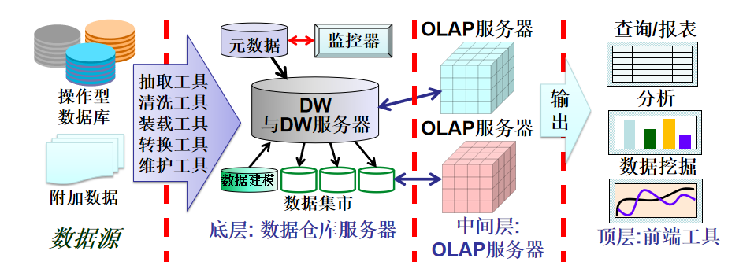
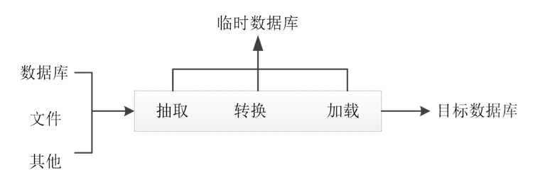
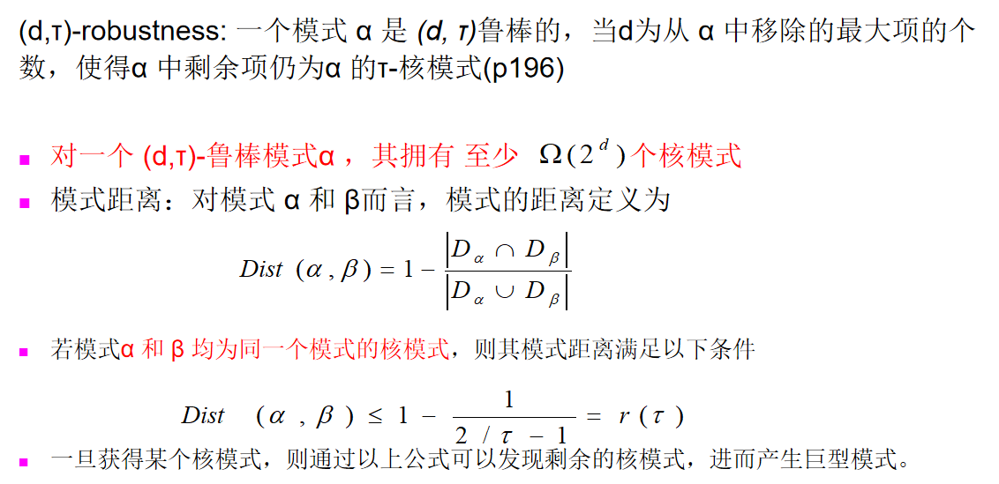
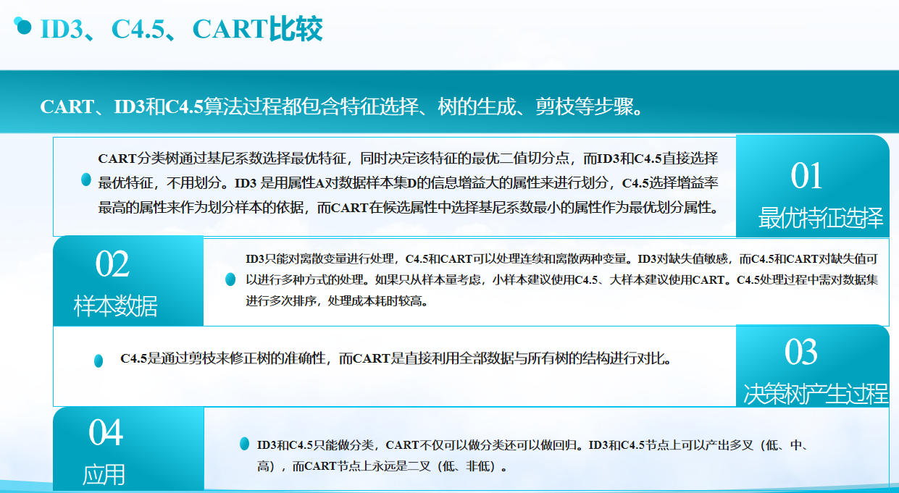
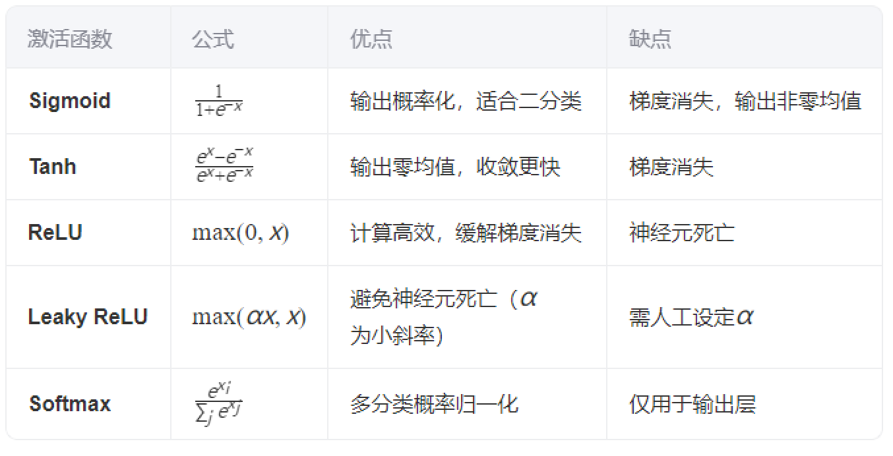
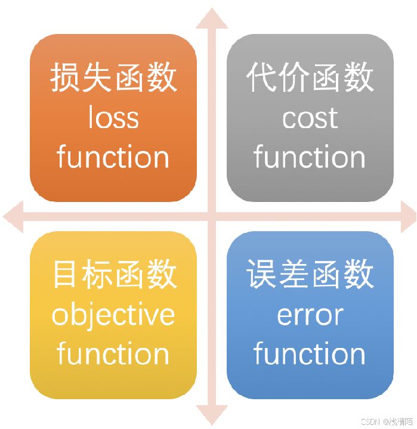

DM复习
数据挖掘
笔者认为，想要从从事的深度学习方面的同学，最好的学习顺序应该是机器学习->数据挖掘（数据预处理部分）->深度学习，从数据挖掘中，我们可以学习到建立一个目标系统系统的第一步应该是处理好对应的数据，一个处理好的数据，有助于你建立一个优秀的模型，机器学习则是我们进行深度学习的基础。

从数据仓库开始属于对wyq学长复习内容的补充，读者可自行选择跳过
数据挖掘定义
从海量数据中抽取感兴趣的模式和知识的过程；从存放在数据库、数据仓库中或其他信息库中的大量数据中挖掘有趣知识的过程。
数据挖掘步骤：
（1）准备数据集，可以从传统数据库，数据仓库或平面文件中获取
（2）选择数据挖掘算法，进行数据挖掘
（3）解释和评估
（4）模型应用
认识数据
数据属性
枚举或标称属性：能够用有限个元素对属性进行描述的集合。如事物的分类，状态或名称。
头发颜色 = {黑色,棕色，淡黄色，灰色，白色}
婚姻状态，职业，ID，邮编等二值属性：只有两个状态的枚举属性
1）对称的二值属性：两种状态具有相同的价值e.g., 性别
2）非对称的二值属性：两种状态的重要性不同.
e.g., 医学测试(阴性 vs. 阳性)
惯例：将较为重要的取值置为1 (e.g., HIV positive)
3. 序列属性
值的顺序具有意义的属性
尺寸= {小,中,大 }, 成绩等
- 数值属性
可用整数或实数值度量的属性。
1）区间标度属性：使用相等的单位尺度度量，可以定量评估属性值的差。取值有顺序e.g., 摄氏温度和华氏温度。没有真实的0点
2）比率标度属性：具有固定零点的数值属性
工作年限、重量、高度和速度等
机器学习开发的分类算法又把属性分为：
- 离散属性：具有有限个数的取值或无限可数的取值。
年龄，工号
用整数表示的属性
注意：二元属性为一种特殊的离散属性 - 连续属性：取值为实数的属性。
如温度、重量和高度等
取值通常用浮点数表示
数据的计量尺度：（由低级到高级）
- 定类尺度：按照事物的某种属性对其进行平行的分类或分组，如性别（男，女）
具有=和≠的数学特性
数据表现为类别
- 定序尺度：是对事物之间等级和顺序差别之间的一种测度，如产品等级（一等品，二等品）
具有<和>的数学特性
数据表现为类别，但有序
- 定距尺度（间隔尺度）：是对事物类别或次序之间的间距的测度，如100分制考试成绩
具有+和-的数学特性
可排序，也可指出类别之间的差距
没有绝对零点（0是测量尺度上的一个测量点，并不代表没有）
- 定比尺度：能够测量两个测度值之间比值的一种计量尺度。如职工月收入，企业产值
除具备上述三种的所有特点外，还可计算两个测度值之间的比值
有绝对零点，0代表没有
具有+-×÷的数学特性

数据的基本统计描述
中心趋势度量：均值，中位数，众数，中列数
数据的散布：极差，四分位数，方差，标准差，四位数极差
这里笔者就不进行过多赘述
数据预处理
数据预处理的目的：提高数据质量
数据质量的要素：准确性、完整性、一致性、时效性、可信性和可解释性
数据预处理主要包括：数据清理、数据集成、数据归约和数据变换
数据清理
任务：属性的选择与处理，填写缺失值；光滑噪声数据；识别或删除离群点；解决不一致不平衡的数据
- 属性选择与处理原则：
- 尽可能赋予属性名和属性值明确的含义
- 统一多数据源的属性值编码
- 处理唯一属性，如ID，姓名 等
- 去除重复属性（表示同一信息），如出生日期和年龄
- 填写空缺值：
忽略元组
忽略属性列
人工填写空缺值
使用属性的中心度量值填写空缺值
- 如果数据的分布是正常的，就可以使用均值来填充缺失值
- 如果数据的分布是倾斜的，可以使用中位数来填充缺失值
使用全局变量填充，如固定值等
使用可能得特征值来填充，即预测出来的值（最常用）
- 处理噪声：
- 分箱(binning)
- 首先排序数据，并将他们分到等深（等宽）的箱中
- 然后按箱平均值平滑（箱中每一个值被箱中的平均值替换）、或按箱中位值平滑（箱中每一个值被箱中的中位值替换）、或按箱边界平滑（箱中最大和最小值是边界。箱中每一个值被最近的边界值替换）。
- 离群点分析
- 计算机和人工检查结合
- 回归
- 不平衡数据（正负样本不均衡）的处理
-
过抽样
通过增加少数类样本来提高少数类的分类性能
如复制少数类样本
存在问题：没有给少数类增加任何新的信息，而且可能会导致过度拟合
欠抽样
- 通过减少多数类样本来提高少数类的分类性能
- 通过随机地去掉一些多数类样本来减少多数类的规模
- 存在问题：会丢失多数类的一些重要信息
生成合成样本:通过生成合成样本的方式增加少数类样本的数量，而不是简单地复制已有的样本。最常用的合成样本生成方法之一是SMOTE（Synthetic Minority Over-sampling Technique），它通过在少数类样本之间插值来生成新的合成样本
使用适合不平衡数据的算法：
修改性能评估指标：
代价敏感学习：
基于特征选择的方法:
阈值调整：在实际应用中，可能需要根据数据集的特点、任务需求以及计算资源等因素，尝试多种方法，并根据模型的性能进行评估和选择。
数据集成
将不同来源的数据进行集成处理，要注意采取措施避免集成时的冗余：例如代表同一概念的属性在不同的数据库中可能具有不同的名字，导致不一致和冗余。
实体识别
冗余和相关性分析
元组重复
数据值冲突的检测与处理
相关性分析
卡方检验（标称属性）
相关系数和协方差（数值属性）
- 变量之间的关系：
相关关系（正相关，负相关）
- 不能用函数关系精确表述
- 一个变量的取值不能由另一个变量来唯一确定
- 变量x取某个值时，变量y的取值可能有几个
函数关系（存在确定性的依存关系）
相关分析：用一个指标来表明现象间相互依存关系的密切程度。广义的相关分析包括相关关系的分析（狭义的相关分析）和回归分析。
数据归约
目的：在保证数据完整的前提下，减少原始数据量
数据归约可以用来得到数据集的归约表示，它小得多，但可以产生相同的（或几乎相同的）分析结果。其花费的计算时间不应超过或“抵消”在归约后的数据挖掘上挖掘所节省的时间。
- 维归约
- 减少属性个数，找到最小的属性集，使得数据集的概率和原分布尽可能相等。
- 选择属性的最小子集可以通过决策树归纳的方法。
- 数量归约
- 参数化数据规约：回归方式，拟合数据
- 非参数化数据规约：直方图（分箱），聚类，抽样等方式
- 数据立方体聚集
- 数据压缩
- 有损压缩：音视频压缩（如小波变换和主成分分析PCA）
- 离散小波变换（DWT）仅存放一小部分最强的小波系数
- DWT是一种更好的有损压缩，所需空间比DFT（离散傅里叶变换）小，小波空间局部性很好。
- 小波变换可用于多维数据，如数据立方体
- 无损压缩：字符串压缩（如哈夫曼压缩）
数据变换
目的：将数据原始数据映射到新的空间中，实现多个数据库数据的统一。
常用方法：
- 属性构造：从给定的属性集中构造新属性
- 规范化：将属性取值映射到一个特定的小区间
- 离散化：用区间标签或概念标签代替原始的数值属性
- 概念分层：标称属性数据的数据变换。
数据规范化
将数据按比例进行缩放，使之落入一个特定的区域，以消除数值型属性因大小不一而造成的挖掘结果的偏差。
常用的方法：
- 小数定标规范化；
- 最小-最大规范化；
- 零-均值规范化（z-score规范化）。
- 小数定标规范化
$$
\grave{v}=\frac{v}{10^j}
$$
例：假定A的取值范围【-986，917】，则A的最大绝对值为986，
为使用小数定规范化，用1000（即j=3)除每个值，这样-986被规范化为
-0.986.
数据仓库
定义：数据仓库是一个面向主题的、集成的、时变的、非易失的数据集合，支持管理者的决策过程
面向主题：为特定的数据分析领域提供数据支持。
数据集成的方法：统一（消除不一致的现象）和综合（对原数据综合和计算）
DW中的数据组织以四个基本特征为基础，分为四个级别：早期细节级，当前细节级，轻度综合级，高度综合级
数据集市
数据集市：是一种更小、更集中的数据仓库，为公司提供分析商业数据的一条廉价途径
- 数据仓库需要大型的计算机服务器，而数据集市仅需要普通服务器
数据集市类型：
- 独立数据集市：数据来自于操作型数据库，是为了满足特殊用户而建立的一种分析型环境。
- 从属数据集市：数据来自于企业的数据仓库
数据仓库和数据集市区别
数据仓库系统
数据仓库系统由数据仓库（DW）、仓库管理和分析工具（查询工具，多维分析工具）三部分组成。

数据仓库设计
数据抽取、清洗、转换和加载
数据抽取、转换和加载（ETL）Extraction，Transformation，Loading
从一个或多个输入源中抽取数据，如果有必要，清洗和转换提取的数据，并将数据加载到数据仓库中。

- 数据抽取
数据抽取是从多个异构的传统数据库、独立数据集市、平面文件等中提取与数据仓库主题相关的数据，进行整合、集成的过程。
抽取可以是以初始化数据仓库为目的的全量抽取和以维护为目的的增量抽取；可以定时自动抽取或人工抽取。
例如：某超市确定以分析客户的购买行为为主题建立数据仓库，则开发人员只需将同客户购买行为相关的数据提取出来，而超市服务员工的数据就没有必要放进数据仓库。
- 数据变换
数据变换主要体现在以下几个方面
(1)缺失数据的替换。
(2)建立完整性约束，并调整数据的一致性。
(3)建立在多数据源中选择数据的判断逻辑。
拆分和合并数据。根据数据分析的需要，对属性和属性值进行分解或合并。
(5)増加数据记录的时间属性。数据仓库中的数据具有历史特性，表达同样事物的数据记录按照建立和消亡的时间，加上时间戳，在数据仓库中存储多个时间版本。
(6)按照数据分析的数据粒度要求，汇总和聚集数据。
- 数据清洗
ETL的抽取和变换过程完成后，可能会产生大量的“脏数据”，如异常数据重复数据、缺失数据等。
目前常用的数据清洗技术包括:
- 数据异常的检测和消除：基于数理统计的方法、模式识别的方法、基于距离的聚类方法等
- 检测重复数据：使用字符串匹配算法等
- 重复数据的消除清洗：优先队列策略等
- 数据加载
指在完成数据抽取、变换和清洗后，按照统一数据格式将符合数据仓库环境要求的数据转存到数据仓库的过程。
- 初始装载。这是第一次对整个数据仓库进行装载。
- 增量装载。由于源系统的变化，数据仓库需要装载变化的数据。
- 完全刷新。这种类型的数据装载用于周期性重写数据仓库。
ETL工具
元数据
元数据是数据仓库的一个综合文档，是数据仓库的核心。
元数据是定义和描述其他数据的数据，在整个数据ETL过程中起到基础作用。
元数据是数据仓库的一部分，它决定了数据分析的有效性。
元数据用于告知用户数据仓库中有什么数据，这些数据来自何处等，也可以通过使用查询工具对元数据进行访问而得知数据仓库中有什么数据、在哪里可以找到这些数据、哪些人被授权可以访问这些数据以及已经预先求出的汇总数据有哪些等。
闭频繁项集：
如果不存在项集X的超项集Y使得Y与X在数据集D中具有相同的支持度计数，则称项集X在数据集D中是闭的。
加不加频繁，取决于支持度有没有超过最小阈值
极大频繁项集：
如果项集X是频繁的，并且不存在超项集Y使得X ⊂Y，且Y在D中是频繁的。
高级频繁模式挖掘
底层的数据项，其支持度往往也较低
请注意：概念分层中，一个节点的支持度肯定不小于该节点的任何子节点的支持度。由概念层1开始向下，到较低的更特定的概念层，对每个概念层的频繁项计算累加计数，每一层的关联规则挖掘可以使用Apriori等多种方法
例如：
先找高层的关联规则：computer -> printer [20%, 60%]
再找较低层的关联规则：laptop -> color printer [10%, 50%]
- 单维规则:
buys(X, “milk”) buys(X, “bread”) - 多维规则: 2 维度或谓词
维间关联规则 (无重复的谓词)
age(X,”19-25”) occupation(X,“student”) buys(X, “computer”)
混合维关联规则 (包含重复的谓词)
age(X,”19-25”) buys(X, “computer”) buys(X, “printer”)
在多维关联规则挖掘中，我们搜索的不是频繁项集，而是频繁谓词集。k-谓词集是包含k个合取谓词的集合。
例如：{age, occupation, buys}是一个3-谓词集
具有不重复谓词的关联规则称为维间关联规则
多层空间的模式挖掘
- 一致支持度：对所有层都使用一致的最小支持度
优点：搜索时容易采用优化策略，即一个项如果不满足最小支持度，它的所有子项都可以不用搜索
缺点：最小支持度值设置困难
太高：将丢掉出现在较低抽象层中有意义的关联规则
太低：会在较高层产生太多的无兴趣的规则
递减支持度
分层Apriori算法
使用递减支持度，可以解决使用一致支持度时在最小支持度值上设定的困难
递减支持度：在较低层使用递减的最小支持度基于分组的支持度
用户和专家清楚哪些分组比其他分组更加重要，在挖掘多层关联规则时，使用用户指定的基于项或者基于分组的最小支持度阈值。混合算法框架：
聚类-关联组合模型
先通过DBSCAN/K-means划分空间簇群，再在子区域内执行分层关联规则挖掘，解决全局规则忽略局部特征的问题
多维空间的模式挖掘
挖掘多维关联规则的技术可以根据量化属性的处理分为以下基本方法：
- 量化属性的静态离散化
使用预定义的概念分层对量化属性进行静态地离散化 - 根据数据分布量化属性离散化或聚类到“箱”
根据数据的分布，将量化属性离散化到“箱” - 基于统计学的异常行为发现方法
Sex = female => Wage: mean=$7/hr (overall mean = $9)
稀有模式和负模式的挖掘
负模式的定义
定义1(基于支持度)
如果项集 X 和 Y均为频繁但很少同时出现的项集，如：
sup(X U Y) < sup (X) * sup(Y)
则称X和Y为负相关
问题：一个缝纫机店销售针宝A和B，其中A和B各售出100包，但只有一个事务中A和B是同时售出的
当整体事务数为200个时，
s(A U B) = 1/200=0.005, s(A) * s(B) =100/200*100/200= 0.25, s(A U B) < s(A) * s(B)
当事务数为105 个时
s(A U B) = 1/105, s(A) * s(B) = 100/105 * 100/105, s(A U B) > s(A) * s(B)
前后矛盾，问题出现在哪里？—零事务（既不包含A也不包含B的事务），因而，定义1不是零不变的。定义2(基于负项集)
X为负项集，如果(1) X = Ā U B，其中B为一个正项的集合，并且Ā为一个负项的集合，且|Ā|≥ 1；(2) s(X) ≥ μ
X为负相关的，当
定义2仍然不是零不变的。
当整体事务数为200个时，
s(Ā U B) =99/200= 0.495, s(Ā ) * s(B) = 0.25, s(Ā U B) > s(Ā) * s(B)
当事务数为105 个时
s(Ā U B) = 99/105, s(Ā) * s(B) = (105-100)/105 * 100/105=99.9/105, s(Ā U B) < s(Ā) * s(B)
因而，定义2不是零不变的。
- 定义3(基于Kulczynski库尔钦斯基)
若项集X与Y均为频繁的，但为 (P(X|Y) + P(Y|X))/2 < є，其中є为负模式阈值，则，X和Y为负相关。
定义3是零不变的，另є =0.01。
当整体事务数为200个时，
P(A|B) = 1/100=0.01, P(B|A) = 0.01
当事务数为105 个时
P(A|B) =1/100= 0.01, P(B|A) = 0.01
因而，定义3是零不变的。
基于约束的挖掘
如果你把约束条件应用在模式筛选上面的话，它就是基于约束的模式筛选，如果你把这个条件应用在我们的数据上的话，它是基于约束的相关数据的筛选，也就说你的约束条件如果应用在数据上，是表示你在进行平方模式算法之前，先去掉了一部分不符合要求的相关数据，那么你未来的算法的效率可能会高一点，如果你把这个条件应用在在运行的过程当中，它其实是表示它要筛掉一部分的候选项目
知识类型约束：指定待挖掘的知识类型，如关联、相关、分类或聚类。
数据约束：指定挖掘任务相关的数据集。如找到在芝加哥的零售店里，所有成对售出的商品组合。
维/层约束：指定挖掘中所使用的数据维（或属性）、抽象层或概念分层结构的层次。
兴趣度约束：指定规则兴趣度的统计度量阈值，如支持度、置性度和相关性。
规则约束：指定要挖掘的规则形式或条件，可以用元规则（或规则模板）表示。
模式空间剪枝
- 反单调的约束
- 单调的约束
- 简洁约束
- 可转变的约束
数据空间剪枝
- 数据简洁的
- 数据反单调的
基于单调约束的模式空间剪枝
- 反单调性
若项集 S 不满足约束，那么它的所有超集都不满足约束
求和(S.价格) v 是反单调的
求和(S.价格) v 不是反单调的例子：约束C：求max(S.价格) 15 是反单调的
项集 ab 不满足 C
ab的任何超集也不满足C
基于单调约束的模式空间剪枝
- 单调性
若项集 S 满足约束，则它的任意超集都满足约束
求和(S.价格) v 是单调的例子：约束C：求min(S.价格) <30
项集 ab 满足 C
ab的所有超集都满足C
基于简洁约束的模式空间剪枝
简洁性:
Idea: 在不查询数据库的前提下，通过选定的项即可判断项集S是否满足约束C。
例如：min(S.Price) > v 是简洁的
例如：要求模式必须包含特定项（如{牛奶, 面包}），否则直接剪枝
当模式p在约束C的条件下，不能满足事务t，同时p的超集也不满足，则称约束C是数据反单调的。
数据反单调的关键在于递归的数据剪枝。
示例：若约束为“项集中商品价格均≥50元”，某数据片段包含价格30元的商品，则其所有超集均不满足约束，可直接剪枝。
示例：如果min(price)>=50
核模式
直观地，对一个频繁模式 α, 其子模式β 与α拥有近似的支持度，且
$$
\frac{|D_\alpha|}{|D_\beta|}\geq\tau,0<\tau\leq1
$$
则称 β 为α 的τ-核模式，其中 τ 为核比例，|D|为包含相应模式的事务数量。
-
一个巨型模式拥有的核模式远超过小模式的核模式
- 一个巨型模式可通过合并一系列的核模式得到
support(X) = |T(X)| / |D|，T(X)就是支持事务集，或者叫D(X)。

分类
通过在已标记数据集上学习而构造的模型，并将其用于预测未标记数据的类别
###ID3算法
ID3算法主要针对属性选择问题，是决策树学习方法中最具影响和最为代表性算法。
如何选择最为合适的属性？
ID3算法的属性选择度量算法核心使用信息熵，计算信息增益，选择最高信息增益的属性作为当前节点的测试属性。
优点：
简单直观：**基于信息增益选择特征，易于理解和实现
构建速度快：计算复杂度相对较低
适合小规模数据：在小数据集上表现良好
可解释性强：生成的决策树易于解释
缺点：
- 偏向多值属性：倾向于选择取值较多的特征（信息增益对多值属性有偏好）
- 无法处理连续值：只能处理离散型特征
- 无剪枝策略：容易过拟合，没有考虑树的复杂度
- 缺失值敏感：不能很好地处理缺失值
- 单变量分裂：每次只考虑一个特征，忽略特征间交互
C4.5算法（ID3的改进版）
优点：
- 改进特征选择：使用信息增益比，减少对多值属性的偏好
- 处理连续值：可以自动离散化连续特征
- 处理缺失值：能够处理包含缺失值的数据
- 加入剪枝：通过悲观剪枝减少过拟合
- 可生成规则集：能将决策树转换为if-then规则
缺点：
- 计算复杂度高：特别是对连续特征需要排序
- 内存消耗大：需要保存大量中间结果
- 仍可能过拟合：虽然比ID3好，但仍可能生成复杂树
- 只适用于分类：不能直接用于回归问题
- 多叉树结构：产生的树可能较宽，影响效率
CART算法（Classification and Regression Trees）
优点：
通用性强：可用于分类和回归问题
二叉树结构：总是生成二叉树，简化模型
优秀的特征选择：使用基尼指数（分类）或最小平方误差（回归）
强大的剪枝：通过代价复杂度剪枝有效防止过拟合
处理连续值：能自然地处理连续特征
处理缺失值：通过替代分裂处理缺失值
缺点：
- 偏向于均衡分割：基尼指数倾向于产生平衡的树
- 不稳定：数据的小变化可能导致完全不同的树
- 计算成本：寻找最优分割的计算量较大
- 多分类问题：可能产生较大的树结构
- 局部最优：贪心算法不能保证全局最优

高级分类
神经网络
神经网络的分类
1）前馈神经网络
2）径向基函数网络
3）反馈神经网络
4）自组织神经网络
5）对抗神经网络GAN
激活函数
激活函数经常使用Sigmoid函数、tanh函数（双曲正切函数）、ReLu函数等
激活函数通常有以下性质
- 非线性（不一定）
- 可微性
- 单调性
- f(x)≈x（这个不一定是必须的）
- 输出值范围（通常是[0,1]）
- 计算简单
- 归一化


损失函数
损失函数也是机器学习模型训练当中至关重要的一环， 一般来说，深度学习模型的目标函数是为了减小真实值与预测值之间的误差，误差越小则说明两者之间的差距越小，模型预测的结果越接近真实值，模型性能也就越好。通常，在深度学习当中，这样的目标函数称为成本函数或者损失函数，由损失函数计算出的值简称为“损失（loss）”。
任务类型：回归任务通常使用MSE或MAE等损失函数，而分类任务则使用交叉熵损失等。
数据分布：如果数据中存在异常值或极端值，可能需要选择对异常值不太敏感的损失函数（如MAE）。
模型特性：某些模型（如生成对抗网络GAN）可能需要使用特定的损失函数（如判别器损失和生成器损失）
学习率
学习率控制每次更新参数的幅度，过高和过低的学习率都可能对模型结果带来不良影响，合适的学习率可以加快模型的训练速度。
解决过拟合问题
- 增加数据集的规模
理论上，如果样本数量足够多，即使模型复杂，也能收敛到一个较好的结果。在实际应用中，由于数据采集成本较高，可以通过数据增强的方式来扩充数据集，如在图像处理中，可以利用反转、平移、切割、调整光亮等手段来增加数据量。
- 模型简化
对于过于复杂的模型，可以通过减少模型的复杂度来避免过拟合。例如，对于线性回归问题，可以降低多项式的次数；对于神经网络，可以减少隐藏层的层数或节点数；对于决策树，可以进行剪枝操作。
- 正则化
正则化是解决过拟合的常用方法，包括L1正则化和L2正则化。L1正则化可以产生稀疏解，有助于特征选择；L2正则化可以降低模型参数的值，防止参数值过大导致过拟合。
- Dropout
在神经网络中，可以通过增加Dropout层来减轻过拟合现象。Dropout层会在每次训练时随机关闭一部分神经元，使模型不能依赖于任何一个特征，从而增强模型的泛化能力。
- 早停法（Early Stopping）
在模型训练过程中，如果发现验证集的误差不再下降或开始上升，可以提前停止训练。这样可以防止模型过度拟合训练数据。
- 数据清洗
在进行数据训练之前，应该对数据进行清洗，删除异常的噪声点，纠正错误的标签，以减少噪声对模型的影响。
通过以上方法，可以有效地减轻或解决过拟合问题，提高模型在未知数据上的泛化能力。
惰性学习
惰性学习（Lazy learning ） (e.g., 基于实例的学习): 只需存储训练集（或者只需要对数据进行简单处理），并且一直等待，直到给定一个检验元组。
急切学习（Eager learning ） (e.g., 前面学习的分类算法): 对于给定的训练元组，训练一个泛化（分类）模型。
- 惰性: 训练的时间代价小，但预测需要的时间更多。
- 精确度
惰性方法能够有效使用一个丰富的假设空间，这是因为它使用许多局部线性函数来形成目标函数的隐式全局最优。
急切学习必须确认一个能够覆盖所有实例空间的假设。
KNN（K-近邻）
KNN算法的核心思想是如果一个样本在特征空间中的k个最相邻的样本中的大多数属于某一个类别，则该样本也属于这个类别，并具有这个类别上样本的特性。
理论上, 如果有无穷多的样本, k越大, 分类效果越好.
这是不可能实现的，实际中样本个数总是有限的
通过交叉验证（将样本数据按照一定比例，拆分出训练用的数据和验证用的数据，比如6：4拆分出部分训练数据和验证数据），从选取一个较小的K值开始，不断增加K的值，然后计算验证集合的方差，最终找到一个比较合适的K值。
多分类模型的构建
分类标签有多个时，如何通过线性模型或SVM构建分类模型？
假设样本数据中有N个类别。
- 一对一拆分（OvO）
基本思想：将N个类别两两匹配，每次使用2个类别的数据训练分类器，从而产生N(N−1)/2个二分类器。使用时，将样本提交给所有的分类器，得到了N(N−1)/2个结果，最终属于哪个类别通过投票产生。
分类器个数：N(N−1)/2个
特点：分类器较多，且每个分类器在训练时只使用了2个类别的样本数据。 - 一对多拆分（OvR）
基本思想：每次将一个类作为样例的正例，其他所有均作为反例，得到N个分类器。也就是说，每个分类器能识别一个固定类别。使用时，若有一个分类器为正类，则就为该类别；若有多个分类器为正类，则选择置信度最高的分类器识别的类别。
分类器个数：N个
特点：相比OvO分类器较少，且每个分类器在训练时使用了所有样本数据。 - ECOC（纠错输出码）
每次将若干个类作为正例、若干个类作为反例。显然OvO、OvR都是其特例。MvM的正、反类设计必须有特殊的设计，常用的一种技术：
基于纠错码的多分类问题：
基本思想：”纠错输出码”，简称ECOC。利用纠错编码理论提升分类鲁棒性。其核心流程包括：
- 编码阶段：将类别标签映射为二进制或矩阵编码（如每列对应一个二分类器，+1/-1表示正负类），形成编码矩阵。
- 训练阶段：根据编码矩阵生成多个二分类器，每个分类器负责特定子任务（如SVM或核匹配追踪算法）。
- 解码阶段：利用海明距离或欧氏距离计算测试样本输出编码与类别编码的相似性，选择距离最小的类别作为预测结果。
- 纠错机制：编码矩阵设计时引入冗余信息，使分类系统能容忍一定程度的子分类器错误（如单个分类器错误可通过纠错码校正）
聚类
聚类（Clustering）是把数据对象划分成子集的过程，就是将数据分组成为多个类（Cluster）。在同一个类内对象之间具有较高的相似度，不同类之间的对象之间的差异较大。